Basics window
The window: a heading, the New item field and Add, the list of items, and the count of items left.
seen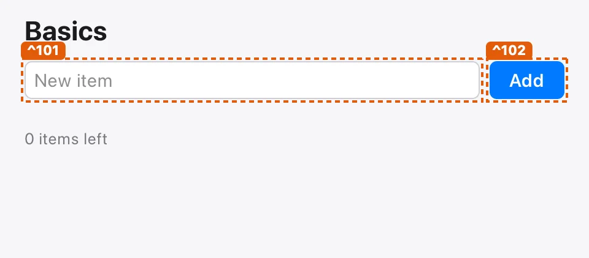
Moves 4
Type in the New item field, and press Enter.
SeesThe text appears in the field; Enter adds it like Add does.
- proved
- 2 theorems (sound edit, sound submit), standard axioms only.
- fuzzed 1k
- Held in 1,000 random sequences, 51,000 steps checked (seed 0).
- tested 5.9k
- 5,899 steps on the running app exercised it, and the frame, accessibility tree, effects and pixels matched the model.
- seen
- Pressed in the capture: before and after.
2 theorems
Basics.typeItem.edit.sound sound editBasics.typeItem.submit.sound sound submitlean/Examples/Basics.lean:292 · Basics.typeItem · ledger: active

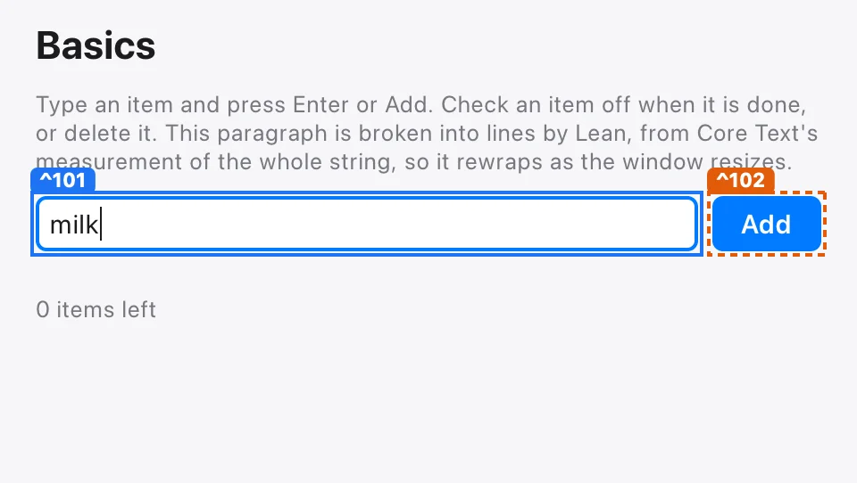
Press Add.
SeesThe field's text, trimmed, is added at the end of the list and the field is cleared. Blank text changes nothing.
- proved
- 1 theorem (sound press), standard axioms only.
- fuzzed 1k
- Held in 1,000 random sequences, 51,000 steps checked (seed 0).
- tested 2.9k
- 2,858 steps on the running app exercised it, and the frame, accessibility tree, effects and pixels matched the model.
- seen
- Pressed in the capture: before and after.
1 theorem
Basics.addItem.press.sound sound presslean/Examples/Basics.lean:305 · Basics.addItem · ledger: active
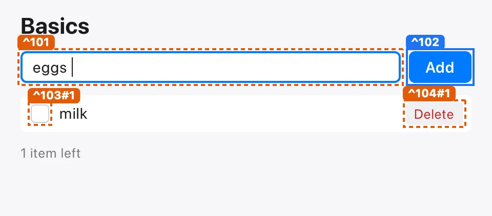
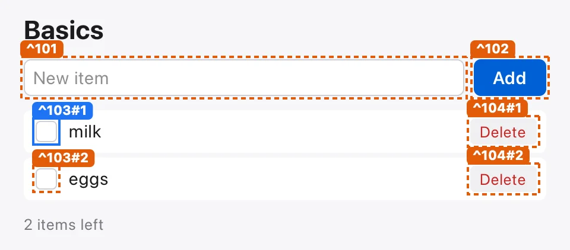
Press an item's checkbox.
SeesThe item is marked done, or not done again, and the count of items left follows.
- proved
- 1 theorem (sound press), standard axioms only.
- fuzzed 1k
- Held in 1,000 random sequences, 51,000 steps checked (seed 0).
- tested 175
- 175 steps on the running app exercised it, and the frame, accessibility tree, effects and pixels matched the model.
- seen
- Pressed in the capture: before and after.
1 theorem
Basics.toggleItem.press.sound sound presslean/Examples/Basics.lean:313 · Basics.toggleItem · ledger: active
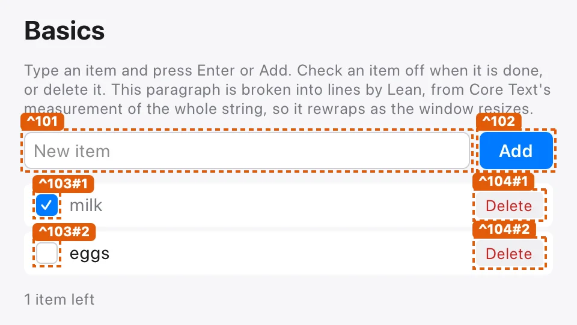
Press an item's delete button.
SeesThe item is gone, and its checkbox and delete button with it.
- proved
- 1 theorem (sound press), standard axioms only.
- fuzzed 1k
- Held in 1,000 random sequences, 51,000 steps checked (seed 0).
- tested 133
- 133 steps on the running app exercised it, and the frame, accessibility tree, effects and pixels matched the model.
- seen
- Pressed in the capture: before and after.
1 theorem
Basics.deleteItem.press.sound sound presslean/Examples/Basics.lean:322 · Basics.deleteItem · ledger: active
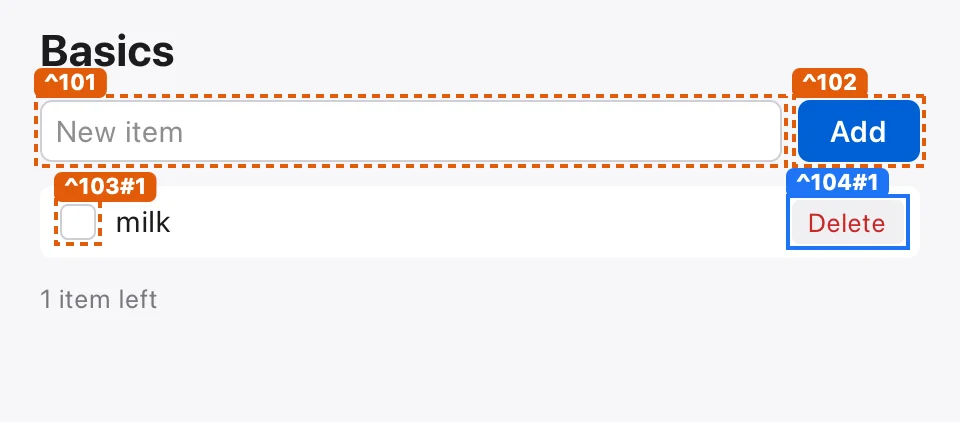

Flows 3
Type milk and press Enter, type eggs and press Add, then check milk.
SeesTwo items, milk done, and one item left.
Witness- proved
- 2 theorems (live, reaches), standard axioms only.
- tested
- Its witness replayed on the running app, and the frame, accessibility tree, effects and pixels matched the model.
- seen
- Its 5 steps replayed in the capture, each on the control it names.
2 theorems
Basics.addAndFinish.live liveBasics.addAndFinish.reaches reacheslean/Examples/Basics.lean:344 · Basics.addAndFinish · ledger: active
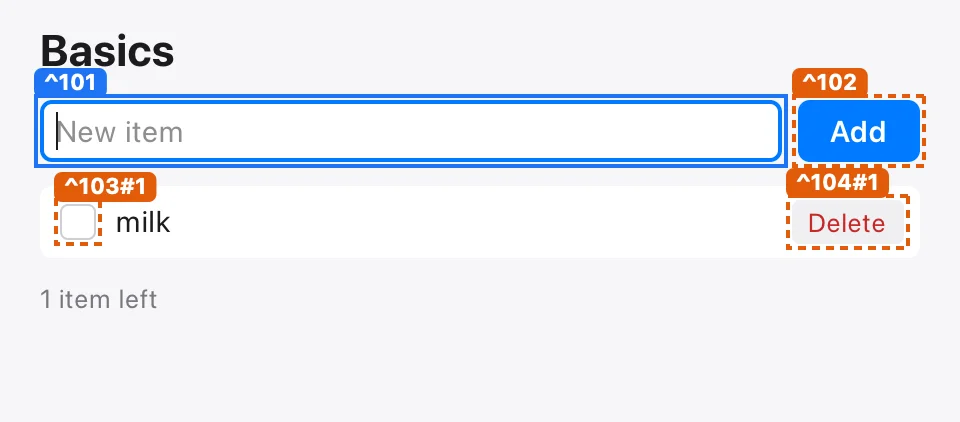
Type spaces, then press Enter and Add.
SeesThe list stays empty.
Witness- proved
- 2 theorems (live, reaches), standard axioms only.
- tested
- Its witness replayed on the running app, and the frame, accessibility tree, effects and pixels matched the model.
- seen
- Its 3 steps replayed in the capture, each on the control it names.
2 theorems
Basics.blankAddsNothing.live liveBasics.blankAddsNothing.reaches reacheslean/Examples/Basics.lean:352 · Basics.blankAddsNothing · ledger: active

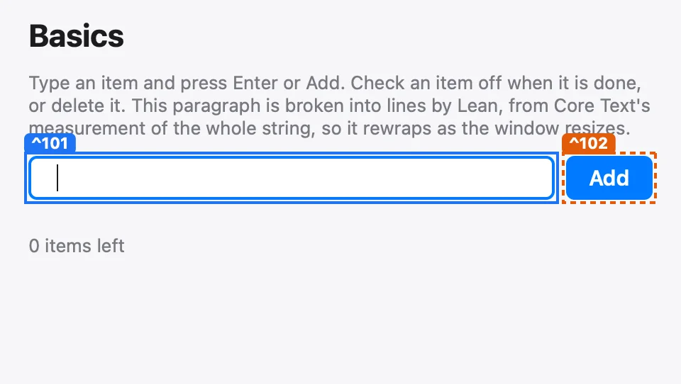
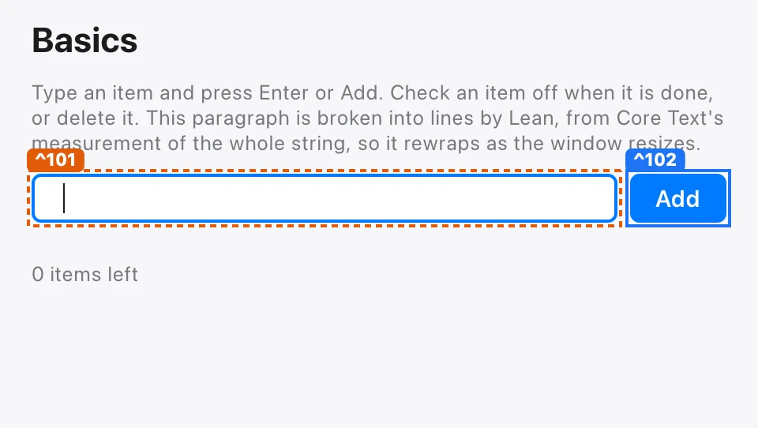
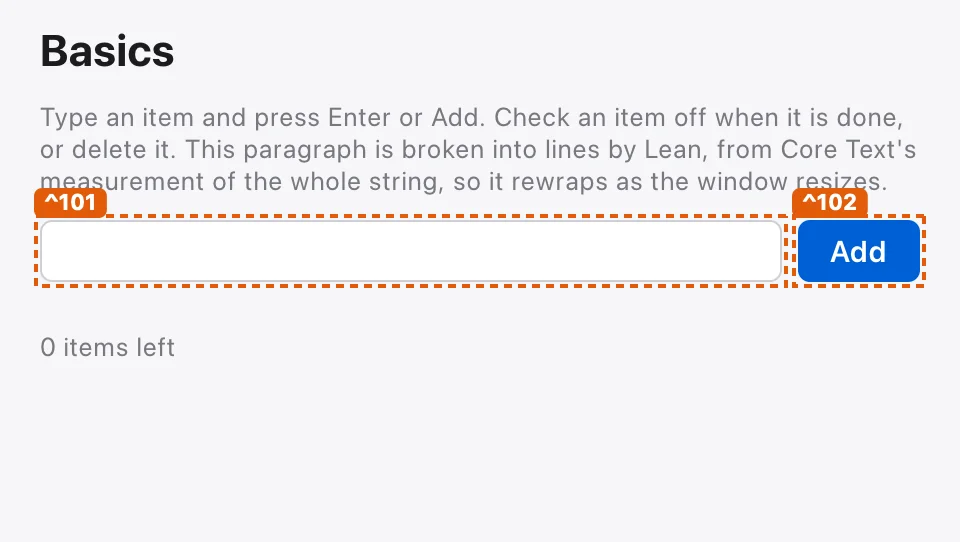
Type milk, press Add, then press milk's delete button.
SeesThe list is empty again, and nothing is left.
Witness- proved
- 2 theorems (live, reaches), standard axioms only.
- tested
- Its witness replayed on the running app, and the frame, accessibility tree, effects and pixels matched the model.
- seen
- Its 3 steps replayed in the capture, each on the control it names.
2 theorems
Basics.addThenDelete.live liveBasics.addThenDelete.reaches reacheslean/Examples/Basics.lean:358 · Basics.addThenDelete · ledger: active
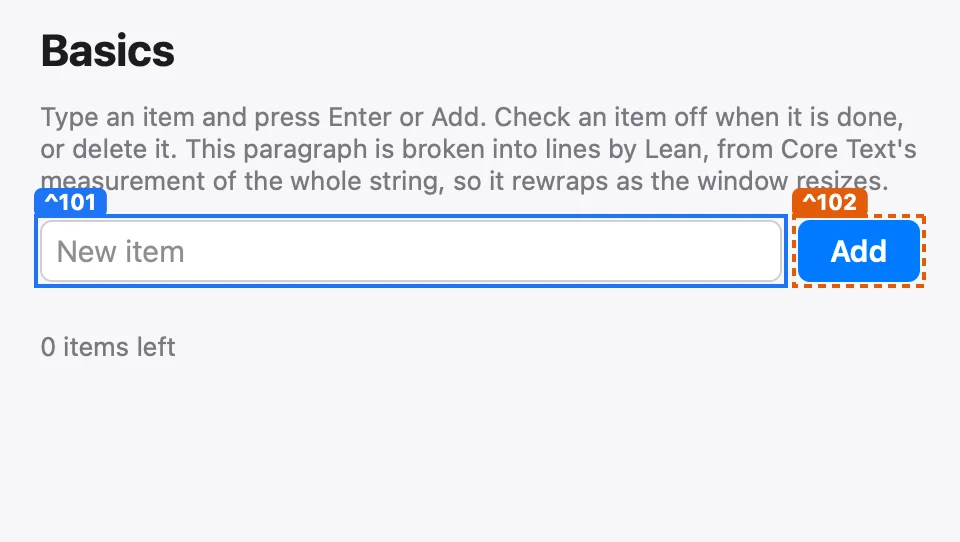